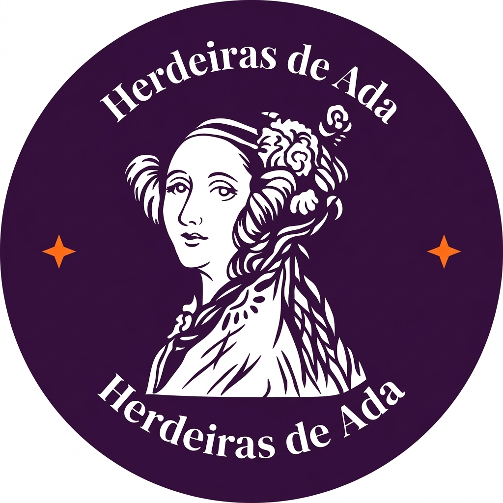
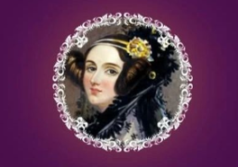

Desmistificar
Quebrar estereótipos
Combater a falsa ideia de que "computação é coisa de menino" e mostrar para as meninas que esse espaço também é delas.

Herdeiras de AdaProjeto de extensão do IFPB Campus Santa Rita dedicado a fortalecer a presença feminina, combater a desigualdade de gênero e inspirar mulheres na tecnologia.
Criado no IFPB Campus Santa Rita para combater o gender gap na área da tecnologia, atrair mais meninas para o curso de Análise e Desenvolvimento de Sistemas (ADS) e garantir que as alunas que já estão no curso não desistam.
Combater a falsa ideia de que "computação é coisa de menino" e mostrar para as meninas que esse espaço também é delas.
Criar uma rede de apoio acolhedora para evitar a desistência das alunas ao longo do curso de ADS no IFPB.
Enfrentar o machismo e a falta de representatividade na TI, promovendo o protagonismo e a liderança feminina.
Uma homenagem a Ada Lovelace, reconhecida como a primeira pessoa programadora da história. O nome reforça o pioneirismo, o legado e o protagonismo feminino na computação.
"Code like Ada."
